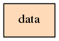
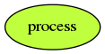
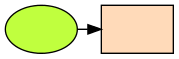

CARONCH
Résumé
Présentation du formalisme CARONCH, Carré-Rond-Flèche. Un formalisme simple permettant de monter les processus et les données d'un système.
1
Objectifs
CARONCH pour Carré - Rond - Flèche est un formalisme simple permettant de monter les processus et les données d'un système.
L'objectif principal de ce formalisme est de mettre en valeur les données et les interactions autour.
2
Représentation graphique
Symboles
 correspond à une donnée.
 correspond à un processus.
Interaction
 correspond à un échange ou une création de données.
3
Règles de construction
Les interactions ne sont pas considérées comme des symboles.
Le temps n'est pas représenté.
L’occurrence des interactions n'est pas représentée.
Il y a alternance entre processus et données.
Il ne peut y avoir deux (2) symboles identiques à la chaîne.
Les labels des symboles doivent être différents s'il caractérisent des informations différentes.
Il est possible de regrouper des symboles pour les agréger en un processus de traitement de données.